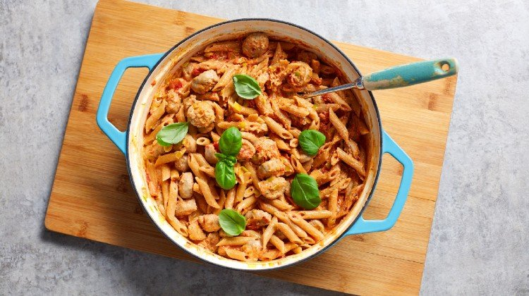

Sausage Pasta

description
Fed up of your daily chicken, rice and broccoli meal prep? Yup, us too. Try this super-lean, high-protein creamy sausage pasta for your next batch meal prep session.
Ingredients
- 1 tsp 100% Coconut Oil
- 1 leek (finely sliced)
- 2 clove garlics (chopped)
- 8 reduced-fat sausages (sliced)
- 200 g quark
- 1 tin chopped tomatoes
- 240 g wholemeal penne pasta
- 1 tsp dried chilli flakes
- 1 pinch of salt & pepper to taste
Steps
- Add the coconut oil to a large, non-stick pan on a medium to high heat. Add the sliced leek into the pan and fry for 3-4 minutes, stirring occasionally.
- Add the garlic and pan fry for a further 2 minutes, then add the sliced sausages and fry for 6-10 minutes, stirring occasionally, until they are brown on all sides. Add the chilli flakes and season with salt and pepper to taste.
- Next, the tin of tomatoes and stir to combine. Let bubble for a few minutes and then add the quark, mixing through thoroughly to get a rich, creamy sauce.
- Add the cooked pasta to the pan and mix in with the sauce so that it’s all combined.
- After a few minutes, take the pasta off the heat and portion up into containers, garnishing with fresh basil leaves.